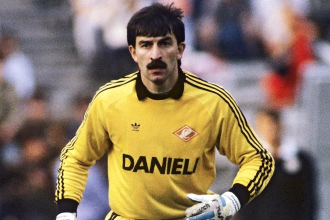
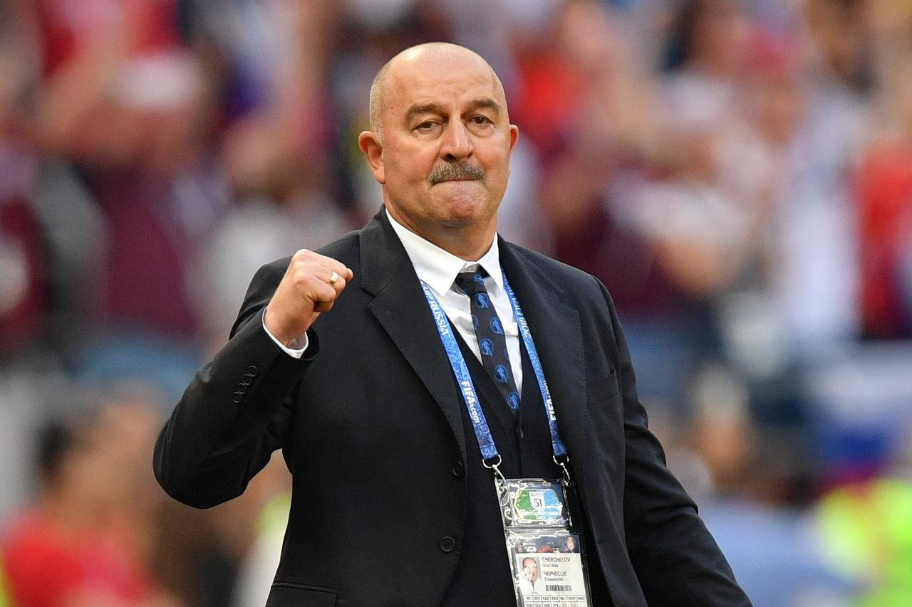

Станислав Черчесов - российский футбольный тренер, в бытность игроком защищавший ворота российских и зарубежных клубов, а также сборных СССР и России. Станислав Черчесов родился в Северной Осетии, в многодетной семье. По национальности футболист и тренер – осетин, а вот о вероисповедании точной информации журналистам спортсмен не дает. В интервью Станислав Черчесов заявлял, что чтит шариат и уважает кавказские традиции, но при этом не относил себя ни к одной религии и не называл истово верующим.С футболом биография Станислава Черчесова переплелась рано. Мальчик с детства полюбил игру миллионов. В детской спортивной школе Станислава сразу поставили на ворота, но Черчесов почти до окончания ДЮСШ также бегал по полю в роли нападающего. В подростковом возрасте юноша вытянулся (рост Черчесова - 183 см), что стало подспорьем для молодого спортсмена.
В 18 лет молодой человек попал в основной состав клуба «Спартак» из Орджоникидзе, а через три года, прекрасно проявив себя в «рамке», перешел к московским одноклубникам. Там Станислав стал дублером знаменитого голкипера Рината Дасаева, впрочем, сам он в тот момент занимал пост номер один крайне редко. Основным игроком Черчесов стал только в 1989 году, после годичной аренды в московском «Локомотиве».
Позднее футболист выступал за немецкий клуб «Динамо» из Дрездена и австрийскую команду «Тироль», где и завершил профессиональные выступления. Если в начале своей карьеры Станислав Черчесов еще допускал обидные ошибки, то в 90-х годах спортсмену стали присущи такие качества, как мгновенное принятие решения, быстрая реакция и анализ собственных оплошностей.
Кроме того, вратарь отличался невероятной волей и верой в себя. Во время выступления за «Тироль» Черчесову пришлось выходить на поле с травмой. Матч усугубил повреждение, и в итоге футболисту сделали операцию по замене хряща. Доктора, работавшие над травмой, в один голос говорили, что после подобного медицинского вмешательства невозможно вернуться в профессиональный спорт. Списали со счетов Станислава и в австрийской команде. Но спортсмен начал усиленно тренироваться, стиснув зубы и не обращая внимание на боль. В итоге Черчесов вернул себе место в воротах, и кроме того, вместе с клубом поднял над головой кубок чемпиона страны. За проявленную волю российскому вратарю присудили специальный приз «Возвращение сезона».
Долгое время выступал Станислав Черчесов и за сборную собственной страны. Более того, футболист до сих пор считается рекордсменом как самый возрастной игрок, когда-либо выходивший на поле в майке главной команды России. Последний матч Черчесов сыграл в возрасте 36 лет и 174 дней. Был вратарь включен в заявку и на чемпионат мира 2002 года, когда футболисту было уже 38 лет, однако на поле ни в одном матче турнира не вышел. После окончания карьеры футболиста и прохождения необходимых курсов, позволяющих получить лицензию тренера, Станислав Черчесов возглавил австрийский клуб «Куфштайн», затем команду из той же страны «Ваккер-Тироль».
В 2006 году тренер вернулся в Россию, чтобы встать у руля московского «Спартака». Работа там оказалась неоднозначной. Черчесов по статистике стал самым успешным тренером после ухода с этой должности легенды «Спартака» Олега Романцева и завоевал серебряные награды чемпионата. Но одновременно с этим под его руководством московская команда потерпела два разгромных поражения от ЦСКА и киевского «Динамо». Кроме того, Станислав Саламович отправил в резерв двух любимцев спартаковских болельщиков - россиянина Егора Титова и украинца Максима Калиниченко. Это тоже не добавило популярности осетинскому тренеру.
>
В августе 2016 года стало известно, что амбициозный специалист утвержден на пост главного тренера сборной России, не сумевшей преодолеть групповой этап чемпионата Европы во Франции. Станислав Черчесов согласился готовить футбольную дружину к домашнему чемпионату мира и подписал контракт, который истекает как раз в конце чемпионата.
-1987, 1989 - чемпион СССР (в составе «Спартака»)
-1989, 1990, 1992 - обладатель приза «Вратарь года» (приз журнала «Огонек»)
-1989 - 2-е место в списке лучших футболистов СССР по опросу еженедельника «Футбол»
-1991 - серебряный призер чемпионата СССР (в составе «Спартака»)
-1991-1992 - обладатель Кубка СССР (в составе «Спартака»)
-1992 - лучший вратарь чемпионата России по оценкам «Спорт-Экспресс»
-1992, 1993 - чемпион России (в составе «Спартака»)
-1993 - обладатель Кубка чемпионов Содружества (в составе «Спартака»)
-1999-2000, 2000-2001, 2001-2002 - чемпион Австрии (в составе «Тироля»)
-2000-2001 - финалист Кубка Австрии (в составе «Тироля»)
-2000,2001 - финалист Суперкубка Австрии (в составе «Тироля»)
-2002 - бронзовый призер чемпионата России (в составе «Спартака»)
-2003 - заслуженный мастер спорта России
-2007 – серебряный призер чемпионата России («Спартак»)
-2015-2016 – чемпион Польши («Легия»)
-2015-2016 – обладатель Кубка Польши («Легия»)
Источник